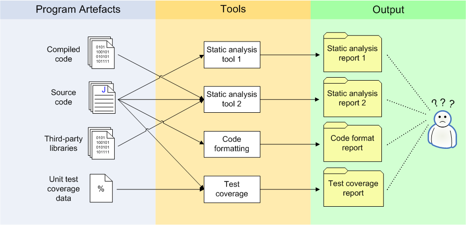
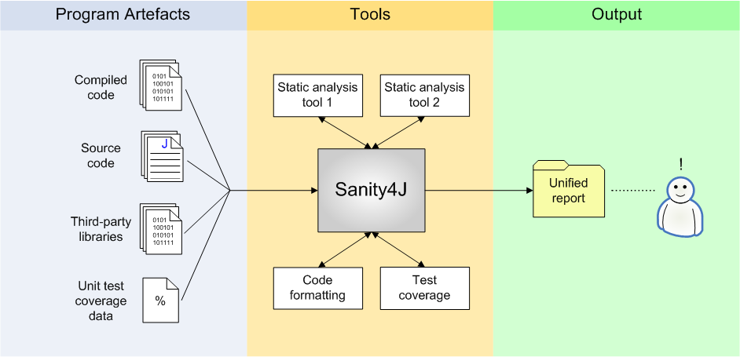
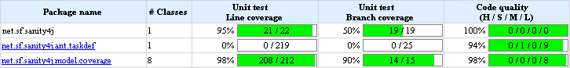

Sanity4J is primarily a tool for running multiple Java code static analysis tools.
Static Analysis tools are used to provide pointers to possible issues in code during the development cycle, as an automated form of code-review. Use of these tools helps to improve the quality of code and reduce the amount of software defects that are delivered for system testing.
For more details on the benefits of using Sanity4J, refer to the "Why use automated QA" section using the site navigation on the left.
There are a wide variety of code analysis tools available to Java developers. Each tool has its own features and purpose, and developers may need to use multiple tools. This introduces two problems: each tool has its own method for configuration and execution; and each tool produces separate output in its own format.
Each tool will therefore require separate integration into a project's build process, which is tedious and can be cumbersome depending on how project source is structured. For example, some tools do not support multiple source directories.
Viewing individual reports also lowers productivity, as developers must switch between several reports to fix issues during development. Having multiple reports also does not allow the ability to view the project health as a whole.
Sanity4J simplifies running multiple static code analysis tools on Java projects on an automated or ad-hoc basis. It provides a single entry point to run all the selected tools and produces a consolidated report, which presents all findings in an easily accessible manner. Sanity4J can also be used to resolve potential problems early on in the development cycle, and has demonstrated improving quality trends over project life-cycles.
Output from a default configuration of the freely available Static Analysis tools is extremely verbose. Masses of insignificant violations can hide important ones. Additionally, there is some overlap between the testing performed by each tool, which results in duplicate violations. Sanity4J optionally provides a single set of high-value violations. The resulting reports are much easier to read.
Each Static Analysis tool has its own severity classification scheme for violations. Sanity4J provides a standard violations rating across all the different tools which it uses. This allows:
Custom rules / rule sets can be can be added to Sanity4J for each of the tools used for analysis, and tool options can be tweaked using an external configuration file.
Most serious projects require that developers deliver automated unit tests written using jUnit. The greater the amount of code exercised by automated tests (coverage), the more certain a maintenance developer can be when determining the impact of a change. A jUnit test coverage and quality summary is included for each package. The "Line coverage" and "Branch coverage" columns indicate the percentage and number of lines/branches covered by jUnit tests. The "Code quality" column displays a quality metric, based on the number of issues per line of code, with weighting based on the severity of the issues.
Sanity4J can currently be run in the following ways: